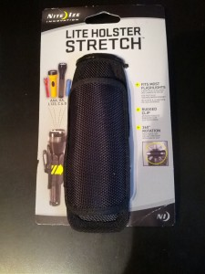

The guys who host the Wake County Action Pistol Matches hosted a no light / low light match last night. It was my first night match. I wasn’t the only night match “virgin”. Only after I arrived did I stop to think about how to reload a gun with a flashlight one hand. Turns out you do it pretty much they same way you do it without the light – but probably slower.
I entered the handheld light division. I’d picked up an Olight T20 at the local gun show last year for every day carry. It seemed to me it would be bright enough and it worked fine for the match. I have small hands and I picked this due to it’s very small size. It puts out 270 lumens. This was plenty bright to shoot the match.
We didn’t need to draw from a holster, but I picked up a $9 belt holster at Lowe’s last week just to have a place to stash the light when I wasn’t shooting. You get what you pay for: it was so tight that I could barely squeeze in the (very thin) light. I shoved a larger light in and let it sit for a week – that loosened up the elastic enough to make it functional for the match. I see the value of a holster designed for the light.I just don’t know where to get one for this light.
{kind=link}
I did hunt down a few youtube videos to check out technique. I’d taken a class a few years back where we tried this but I honestly didn’t remember much. These were helpful:
- Talon Training: Flashlight Shooting Techniques
- RugerFirearms: Tactical Tips Part-12: Flash Light Technique
- Polenar Tactical: Flashlight Shooting Techniques (very short overview)
The RSOs were great. Everyone was encouraged to take their time and above all be safe. We shot 4 stages and had some special treats: one stage incorporated a flashing blue light, one had a swinger, and one had a target with a flashlight pointed at the shooter.
Lessons I learned:
- I shoot well with one hand. So the FBI Technique worked well for me. However, when I keep the light close to me, I also tended to hold the gun in close. I need to remember to extend my shooting arm.
- I limp wrist when I use the Harries Hold. I lost count of the malfunctions I had on Stage 4. The entire stage was shot from a sitting position and I tried using this hold. I really want to give that another try and focus on holding the gun rather than creating opposing tension against each hand. But this is why I shot the match: to learn where I need to work next.
Below is the video that Ben posted after the match you give you an idea what the shooter saw. I really look forward to the next opportunity to try this again.
I found a nice review of the OLight T20 here: http://www.invictustacticalreview.com/all-reviews/tactical-gear/olight-t20-led-flashlight-review/. Looks like you just tusk it in a pocket and skip the holster.
Found this via Facebook, more video of the match here: https://www.youtube.com/watch?v=ZSgqFiW084M